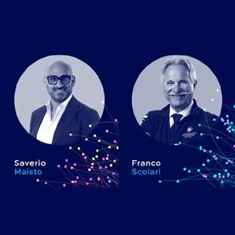

dom 22 nov · dalle 15:00
Malnisio Science Festival - Saverio Maisto - Franco Scolari
Intelligenza artificiale, robotica, automazione: come stanno cambiando le imprese? E quali opportunità si aprono per chi lavora, produce e innova? Nel territorio di Pordenone, queste sfide incontrano una lunga storia industriale. Nato nel 1966 per contribuire alla ricostruzione…
 Indicazioni
Indicazioni
- Costi e prenotazioni
- Costo non indicato · Prenotazione non indicata
- Programma
- Programma da verificare. Apri la fonte ufficiale per orari e possibili aggiornamenti.
- In caso di maltempo
- Nessuna indicazione specifica pubblicata.
- Note
- Acquisito automaticamente dalla fonte.
L’EVENTO
Descrizione completa
Intelligenza artificiale, robotica, automazione: come stanno cambiando le imprese? E quali opportunità si aprono per chi lavora, produce e innova?
Nel territorio di Pordenone, queste sfide incontrano una lunga storia industriale. Nato nel 1966 per contribuire alla ricostruzione economica dopo il disastro del Vajont, il Consorzio per il Nucleo di Industrializzazione della Provincia di Pordenone (NIP), con sede a Maniago, è oggi un punto di riferimento per oltre cento imprese, attraverso infrastrutture, servizi e progetti di sviluppo e innovazione.
Al Malnisio Science Festival 2026 ne parleremo con Saverio Maisto, del Consorzio NIP, e Franco Scolari, direttore del Polo Tecnologico Alto Adriatico: due realtà impegnate a sostenere lo sviluppo del sistema produttivo e le connessioni tra imprese, ricerca e innovazione.
“Il mondo iperconnesso. Le aziende al tempo di AI, robotica e nuove tecnologie” sarà l'occasione per esplorare le sfide che attendono le imprese: dall'integrazione dell'intelligenza artificiale nei processi produttivi alle competenze necessarie per affrontare il cambiamento.
Come possono le piccole e medie imprese cogliere queste opportunità? E quanto contano le connessioni tra aziende, ricerca e territorio?
Perché il futuro dell'innovazione si costruisce anche mettendo in rete conoscenze, esperienze e persone!
Domenica 22 novembre 2026
Ore 15.00 – 15.45
Sala Rossa – Caffè Letterario
Centrale idroelettrica “A. Pitter”, Malnisio – Montereale Valcellina (PN)
Ingresso gratuito, registrazione in loco
Programma completo:
https://malnisiosciencefestival.eu/programma-2026/
IL PROGRAMMA
Programma e orari
Appuntamenti raccolti dalle fonti elencate. Dove manca un orario, non è ancora disponibile in questa scheda.
Programma pubblicato
- Ore 15.00 – 15.45
INFORMAZIONI UTILI
Prima di partire
- Controllare la fonte prima di partire.
ORGANIZZAZIONE